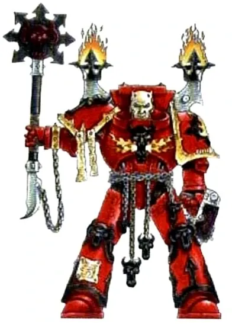
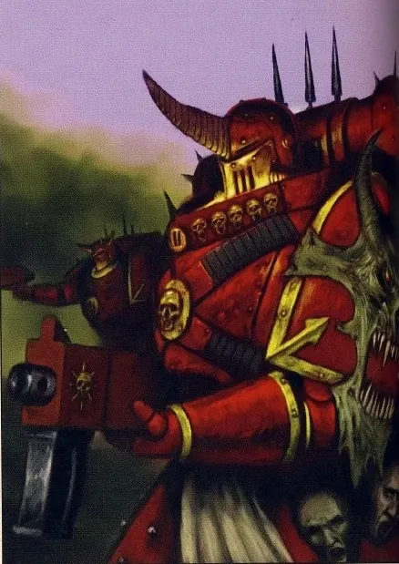
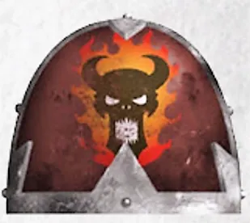
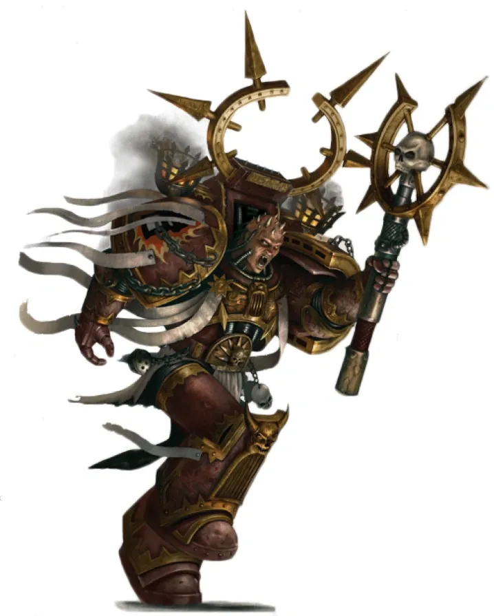
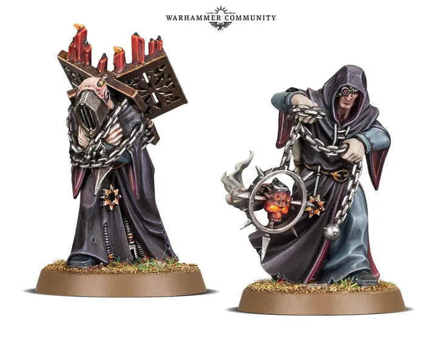
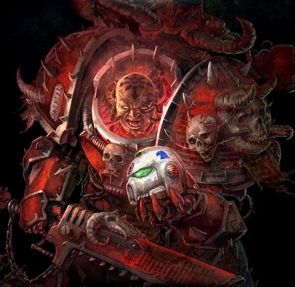
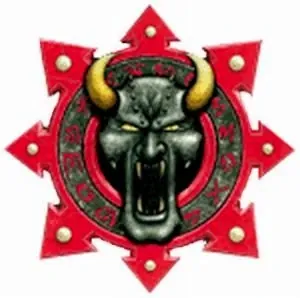

01ภาพรวม

Legion แรกที่บูชา Chaos — ผู้เผยแผ่ 'ศาสนาที่แท้จริง' ด้วยไฟและเลือด
02ต้นกำเนิด
Legion ที่ 17 ภายใต้ Lorgar ผู้เคยบูชาจักรพรรดิเป็นพระเจ้า หลังถูกลงโทษที่ Monarchia พวกเขาหันไปพบเทพแห่ง Chaos และเป็นผู้วางแผน Horus Heresy ตั้งแต่เริ่ม
03เนื้อเรื่องเจาะลึก
Monarchia — เมืองที่ถูกเผา
Lorgar สร้างเมืองสมบูรณ์แบบ Monarchia เพื่อบูชาจักรพรรดิเป็นพระเจ้า จักรพรรดิไม่ต้องการถูกบูชา จึงสั่ง Ultramarines เผาเมืองทิ้งต่อหน้า Word Bearers ทั้ง Legion แล้วบังคับให้พวกเขาคุกเข่า ความอับอายนี้ทำให้ Lorgar หันไปหาเทพที่ "ยอมรับการบูชา"
Calth — การแก้แค้น
Word Bearers ลอบโจมตี Ultramarines ที่ Calth ด้วยการทำให้ดาวฤกษ์ของระบบไม่เสถียร ต่อด้วย Shadow Crusade ที่ใช้ปีศาจบุก Ultramar นี่คือการแก้แค้นเรื่อง Monarchia และความเกลียดชังระหว่างสอง Legion ยังคงอยู่ถึงวันนี้
04ยุค 30K — ในยุค Great Crusade และ Horus Heresy

ยุค 30K เป็น Legion ที่เคร่งศาสนาที่สุด สร้างวิหารบูชาจักรพรรดิ ถูกลงโทษจนต้องคุกเข่าในเถ้าถ่านของ Monarchia — จุดเริ่มต้นของการทรยศ
ดูภาพรวมยุค 30K ทั้งหมดที่ เนื้อเรื่องยุค 30K และความต่างของสองยุคที่ เปรียบเทียบ 30K vs 40K
05นิสัยและวัฒนธรรม
- นำโดยสภา Dark Apostle — นักบวชนักรบที่เทศนาและนำพิธีกรรม
- มุ่ง 'เปลี่ยนศาสนา' ของมนุษย์ ไม่ใช่แค่ฆ่า
- รวมเป็นหนึ่งเดียวมากกว่า Legion ผู้ทรยศอื่น ๆ
06จุดที่น่าสนใจ
- Erebus: ผู้วางแผนให้ Horus ถูกแทงด้วยมีดต้องสาป Anathame บนดวงจันทร์ Davin จนหันไปหา Chaos
- Kor Phaeron: พ่อบุญธรรมของ Lorgar และผู้นำฝ่ายหนึ่งในสภา
07ความสามารถพิเศษ
สิ่งที่ทำให้ Word Bearers แตกต่างจากทัพอื่น — ทั้งพลังที่ติดตัวมาทั้งเผ่า/ทัพ และความสามารถของบุคคลสำคัญ
ของทั้งเผ่า/ทัพ

ศรัทธาคือพลัง
Legion ที่คลั่งศาสนาที่สุด เชื่อว่าการบูชาเทพ Chaos คือความจริงของจักรวาล คำเทศนาของ Dark Apostle ปลุกกองทัพผู้บูชาหลายล้านให้ลุกขึ้นก่อกบฏ

ปีศาจสิงร่าง (Possession)
Word Bearers เป็นผู้บุกเบิกการให้ปีศาจสิงในร่าง Space Marine ตั้งแต่ยุค Heresy (Gal Vorbak) ได้ร่างที่แข็งแกร่งเกินธรรมชาติ แต่เสียตัวตนบางส่วนไปตลอดกาล

พิธีกรรมและการสังเวย
ใช้การสังเวยเลือดและพิธีกรรมเปิดประตูสู่ Warp เรียกปีศาจลงมาบนดาว เช่นที่ทำใน Shadow Crusade ทำลาย Ultramar
ของบุคคลสำคัญ

Lorgar Aurelian
Daemon Primarch ผู้สันโดษPrimarch ผู้แรกที่บูชา Chaos เคยถูกจักรพรรดิตำหนิเรื่องการบูชาพระองค์เป็นพระเจ้า ปัจจุบันเป็น Daemon Prince ที่เก็บตัวทำสมาธิใน Eye of Terror

Erebus
ผู้ก่อ Horus HeresyFirst Chaplain ที่วางแผนล่อลวง Horus ให้หันไปหา Chaos ถูกมองว่าเป็นผู้จุดชนวนสงครามที่แท้จริง

Kor Phaeron
Master of the Faithบิดาบุญธรรมของ Lorgar บนดาว Colchis ผู้ร่วมวางแผนนำ Legion สู่ Chaos
08หน่วยและบทบาทในกองทัพ
Word Bearers คือ Legion ที่คลั่งศาสนาที่สุด นักบวชจึงมีอำนาจเหนือทหาร โครงสร้างแต่ละ Host (กองทัพ) นำโดย Dark Apostle ไม่ใช่ Chaos Lord

Dark Apostle
ดาร์กอะพอสเซิลผู้นำทางศาสนาและทางทหารของ Host หนึ่งกอง เทศนาให้ผู้ติดตามหลายพันคนคลั่งศรัทธา

Dark Disciple
ดาร์กดิสไซเปิลลูกศิษย์ของ Dark Apostle ช่วยในพิธีสวดและคอยหนุนพลังศรัทธา

First Acolyte
เฟิร์สต์อะโคไลต์มือขวาของ Dark Apostle และผู้สืบทอดตำแหน่ง มักวางแผนแย่งตำแหน่งอยู่เสมอ
Gal Vorbak
กัลวอร์บักทหารที่ยอมให้ปีศาจสิงร่างอย่างถาวรตั้งแต่ยุค Horus Heresy เป็น Possessed กลุ่มแรกของประวัติศาสตร์

Coryphaus
โครีฟอสผู้ช่วยทางทหารของ Dark Apostle ทำหน้าที่นำรบในสนาม
หน่วยทั่วไปของ Chaos Space Marines (Sorcerer, Warpsmith, Dark Apostle ฯลฯ) ดูได้ที่ หน่วยและบทบาทของ Chaos Space Marines
09วีรกรรมและเหตุการณ์สำคัญ
Isstvan V
ทรยศกลางสนามรบ
Calth
โจมตี Ultramarines แบบไม่ทันตั้งตัว
Talledus War
Kor Phaeron นำการบุกระบบดาวศักดิ์สิทธิ์ Talledus โดยดึง Iron Warriors และ Night Lords มาร่วม
10ตัวละครสำคัญ
Kor Phaeron
Keeper of the Faithผู้นำฝ่ายหนึ่งของสภา Dark Council
Erebus
Dark Apostleผู้วางแผน Horus Heresy
11ยุค 40K — สหัสวรรษที่ 41
ยุค 40K Word Bearers ทำ 'สงครามศรัทธา' แพร่ลัทธิ Chaos ในจักรวรรดิ โจมตีดาวศักดิ์สิทธิ์ของศาสนจักร
12เนื้อเรื่องล่าสุด (Era Indomitus / M42)
บุก Shrine World จำนวนมากหลังการเกิด Great Rift และ Lorgar ซึ่งปลีกตัวเก็บตัวมานับหมื่นปีเริ่มกลับมามีบทบาทอีกครั้ง
หลังการเกิด Great Rift ปฏิทินของจักรวรรดิคลาดเคลื่อน เหตุการณ์ยุคปัจจุบันจึงมักระบุเพียง 'M42' ไม่มีปีที่แน่นอน
13แกลเลอรี